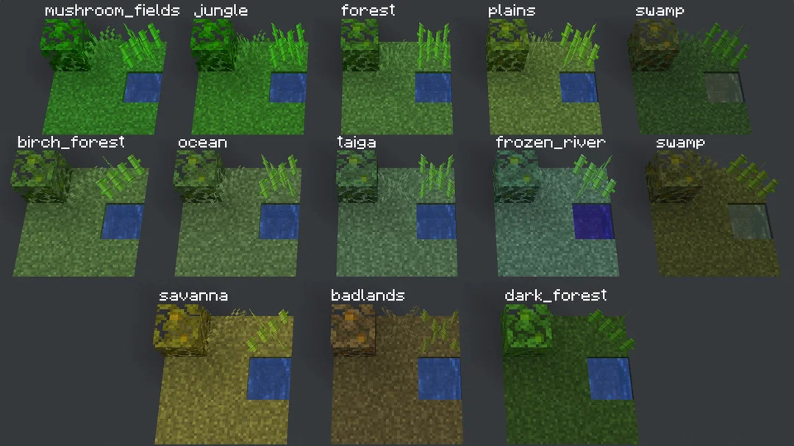

The Course Study Guide is online.
The Phonetics/Phonology Quick Reference is helpful!
Schwa vs. Wedge
Phonology is awesome
What is phonology?
Phonemic Analysis from three different perspectives
How to tell if your instructor is actually Batman
Writing phonological rules
We’re going to start differentiating words in IPA between // and [ ]
/tap/ means ‘top’ at an abstract level.
[tap] means that sequence of sounds at a surface level.
/tap/ exists in the speaker’s mind, [tap] exits a person’s mouth
More later…
What sounds we’re using in English
How to describe them
… and some symbols we can use to talk about sounds, not letters
[skɪps]
[pɪks]
but…
*[kɪds]
*[kɪss]
There are several versions, or “allomorphs”, of the plural marking chunk (the ‘morpheme’)
Is this just a memorized pattern?
What would /s/ become for new words?
[wʌgs]
[wʌgz]
[wʌgɪs]
[wʌgɪz]
[wʌks]
[wʌkz]
[wʌkɪs]
[wʌkɪz]
[wʌʃs]
[wʌʃz]
[wʌʃɪs]
[wʌʃɪz]
 |
Phonology is the study of how sounds pattern in Language and languages
What sounds differentiate words? (Phonemic Analysis)
How do speakers tend to group sounds together? (Natural Classes)
What combinations are “legal†or preferred in the language? (Phonotactics)
How are syllables formed and what kinds are legal? (Syllable Structure)
How do we assign stress, pitch, and emphasis? (Metrical Phonology)
How can we generate a theory that explains all of that?
In theoretical linguistics, we have three big questions:
“How can we model human language and grammar?”
“Do these models describe what humans are doing in real language?”
“Are these models cognitively real?”
Are we choosing a form among many which does the fewest things we don’t like?
Are we just remembering the words we’ve heard said before, and doing the rest from analogy?
Are we using rules that transform ‘underlying’ sounds into one another?
“Does some process change /s/ into [z] or [ɪz]?”
We’re going to take this approach in this class!
Do they predict all the things that really happen?
Do they avoid predicting crazy things that never happen?
How do they account for exceptions and other weird data?
Do they work for all languages, or just a subset?
Could they be naturally learned and acquired by humans?
Do they depend on assumptions that some information is innate?
Does this theory describe what’s actually happening inside the human mind?
… or is it just a tool for describing how languages work, which doesn’t claim to be how humans make the choices?
Phoneticians are more concerned with the physical processes of speech
Phonologists are more concerned with the patterns of sound structure in different languages
… and phonetic laboratory methods for studying phonological problems is a booming world
Phonetics 💕 Phonology
Phonologists and phoneticians ask different questions
We respect each other, and often hang out, but we’re not doing the same thing

What are the meaningful chunks of words (‘morphemes’) in this language?
What are the words in this language?
How should this language be written?
Decisions will need to be made
Which sounds carry a contrast
Which sounds define words
Which sounds cannot be changed without changing meanings
Determining which sound changes affect the meaning of a word in a language
… which sound changes are predictable, and don’t change word meanings
… and which sound variations are completely unpredictable and meaningless
1: By looking at data
2: By looking at perception
3: By looking at distributions
That’s why I’m covering it from three directions
If you’re struggling here, come to office hours
It’s normal and natural to struggle here
“People use a huge set of sounds, and I don’t know which differences matter!”
“What changes in sounds are random, and don’t affect the meanings?”
“What changes in sounds are meaningful, and change the meaning of a word?”
“What changes in sounds can be predicted based on the other elements of the word, and don’t change the meaning?”
“What should I write down in my grammar or dictionary?”
| [t̪im] | [tim] |
| [t̪iz] | [tiz] |
| [t̪aj] | [taj] |
| [t̪ap] | [tap] |
In English, it doesn’t matter whether a /t/ is made as a dental sound [t̪] or an alveolar sound [t]
Speakers can do two things and nobody particularly cares
There’s no pattern, no standard, just maddening chaos
This is free variation.
| [ki] | [pi] |
|---|---|
| [kat] | [pat] |
| [kæst] | [pæst] |
| [kap] | [pap] |
| [kul] | [pul] |
When you change from /k/ to /p/, the meaning of the word changes
We see ‘minimal pairs’ (e.g. /ki/ and /pi/) where that segment is the only thing that’s changed.
/k/ and /p/ are in a contrastive distribution
They represent two different phonemes
| [sejf] | [sej:v] |
| [ejp] | [ej:b] |
| [mejt] | [mej:d] |
| [ejtʃ] | [ej:dʒ] |
| [ejk] | [ej:g] |
| [mejs] | [mej:z] |
Changing from a short to long [ej] doesn’t change the meaning for speakers
Vowel length is predictable based on the voicing of the next consonant
Short and long vowels are in a complementary distribution
They are allophones of the same phoneme
😃 I feel like I understand it well!
🙂 I’m following, no problem.
😠I’m not quite sure if I get it.
😕 I feel a bit confused.
😠I feel completely lost!
When somebody says either
When somebody says either
Light l ([l] as in ‘lip’)
‘Dark’ or Velarized l ([ɫ] as in ‘pill’)
The ‘Dark’ L happens at the end of a syllable
When somebody says either…
When somebody says either…
When somebody says…
… and that trading is opaque to speakers
The /l/ phoneme has two allophones in English: [l] and [ɫ]
The /t/ phoneme has many allophones in English: [t], [tʰ], [ʔ], [t˺], [ɾ], [ɾ̃]
Every sound produced is an allophone of some phoneme
😃 I feel like I understand it well!
🙂 I’m following, no problem.
😠I’m not quite sure if I get it.
😕 I feel a bit confused.
😠I feel completely lost!
They always show up in specific environments, and don’t affect the meaning of the word
[ɱ] shows up in English only when there’s an /m/ before an /f/
[n̪] shows up in English only when there’s an /n/ before an Interdental sound
[ɫ] shows up in MUSE only at the end of a syllable
‘lip’ [lɪp] but ‘pill’ [pɪɫ]
There is no pattern which dictates where they show up
They can occur in the same environments
They form ‘minimal pairs’, different words which differ only in that sound

Finding two people talking to each other in the same place is a good indication that they’re independent entities
Two different personas can’t be in the same place at the same time!
They’re in contrastive distribution
If two sounds show up in an identical context, they’re independent phonemes
This is a potential sign that Matt could be the same being as Batman
If Matt runs into the bathroom when crime happens and Batman emerges, that’s pretty good evidence
They’re in complementary distribution
If two sounds only show up in different contexts, or a sound suddenly changes, they’re probably allophones of one phoneme
(Batman and his alter-ego, Bruce Wayne)
(Batman and Superman, two different heroes) 
Batman and Bruce Wayne are really just one being
[ej] and [ej:] are just one sound /ej/ in English phonology
Batman and Matt Zaslansky are different individuals

You can look at the data and see when the meaning changes
You can look at perception, and see what changes listeners “hear”
You can look at the distribution, and see what sounds occur when.
😃 I feel like I understand it well!
🙂 I’m following, no problem.
😠I’m not quite sure if I get it.
😕 I feel a bit confused.
😠I feel completely lost!
If you have a minimal pair where the meaning changes, the sounds are different phonemes and your work is done. Always.
0: Check for Minimal Pairs, if none…
1: Collect all the environments the sound you’re interested in can occur in
2: State the distribution of the sounds.
3: Decide which allophone is the basic underlying form
4: Write rules to derive the other allophone(s) from it based on environment
Write down what follows and precedes them
Use __ to help focus your brain on the context
“This one occurs before/after/around/near __”
Sometimes you can only describe where one happens
Test hypotheses!

Choose the one you can’t predict
Often it’s the “everywhere else†allophone
Adjacent sound or sounds
Adjacent types of sound
Word boundaries
Syllable boundaries
Sounds or later earlier in the word
They’re in a complementary distribution
You can predict which one will show up based on the environment
How do I express that prediction to somebody else?
You describe the distribution of the allophones of a phoneme with phonological rules
“X turns into Y in environment Z”
“X -> Y†means “X turns into Y”
Then the “/†which means “in the environment”
Then you add a blank, representing where the sound goes that’s getting transformed “__”
… And you position that blank relative to the conditioning environment.
/n/ -> [ŋ] / __ [velar sounds]
If it happened after velar sounds…
/n/ -> [ŋ] / [velar sounds] __
“#†means “the boundary of a word”
“V†means “any vowel”
“C†means “any consonant”
“ø†means “Nothing”
A /t/ being deleted is /t/ -> ø / …
A /t/ being inserted is ø -> [t] / …
/t/ -> [t̪] /__[dental C]
/ej/ -> [ej:] / __[+voice]
/V/ -> [Ṽ] / __[nasal]
Bruce Wayne –> Batman / [Crime]__[Crime]
These groups will all share a ‘feature’
[stops] -> [fricatives] / __[back vowels]
Any group of sounds which share an articulatory feature can be called a ‘natural class’
We’ll talk more about these next time
These are chunks of meaning (‘morphemes’) like the plural /s/ or past tense /d/ which change depending on nearby sounds
The English plural “s†can be [s], [z], or [ɪz]
The English past tense “ed†can be [t], [d], or [əd]
| -t verbs | -d verbs | -ɪd verbs |
|---|---|---|
| [wakt] | [sɪnd] | [ɹʌstɪd] |
| [pæst] | [sʌnd] | [tʌftɪd] |
| [lɪkt] | [glʌvd] | [bɔɹdɪd] |
| [waʃt] | [buzd] | [pɪɾɪd] |
| [lust] | [stownd] | [sajtɪd] |
/-d/ -> [-t] / [voiceless C]__
/-d/ -> [-d] / [voiced C]__
/-d/ -> [-ɪd] / [alveolar stop/tap]__
The English past is more complicated than this, in practice!
| [l] | Gloss | [n] | Gloss |
|---|---|---|---|
| [lʲet] | ‘year’ | [sin] | ‘son’ |
| [lʲublʲu] | ‘I love’ | [nʲet] | ‘no’ |
| [slon] | ‘elephant’ | [maʃina] | ‘car’ |
| [dʲelal] | ‘did’ | [novʲi] | ‘new’ |
| [bʲeli] | ‘white’ | [rajon] | ‘district’ |
| [d] | Gloss | [ð] | Gloss |
|---|---|---|---|
| [daɲo] | ‘damage’ | [kaða] | ‘each’ |
| [pared] | ‘wall’ | [seða] | ‘silk’ |
| [red] | ‘network’ | [reðes] | ‘networks’ |
| [dentro] | ‘inside’ | [oða] | ‘ode’ |
| [vendo] | ‘I sell’ | [kaðena] | ‘chain’ |
/d/ -> [ð] / V__V
Also, /b/ -> [β] / V__V
And, /g/ -> [ɣ] / V__V
“Voiced stops become fricatives at the same place of articulation between vowels”
Phonology is the study of how sounds pattern
Phonemic analysis is how we determine which sounds have an identity in the language
Matt may be Batman
Phonology is fun!
Four common phonological processes
Phonotactics
More data!